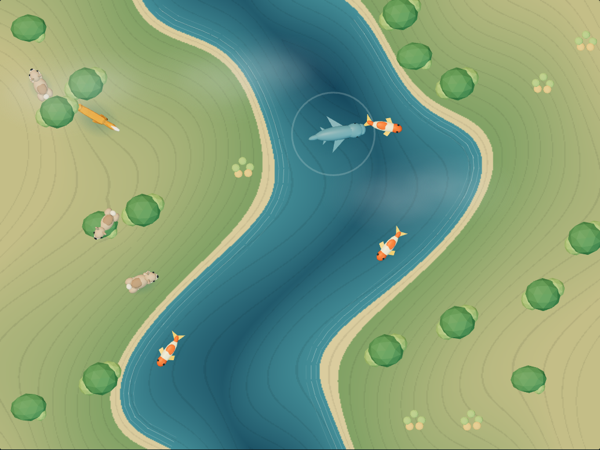
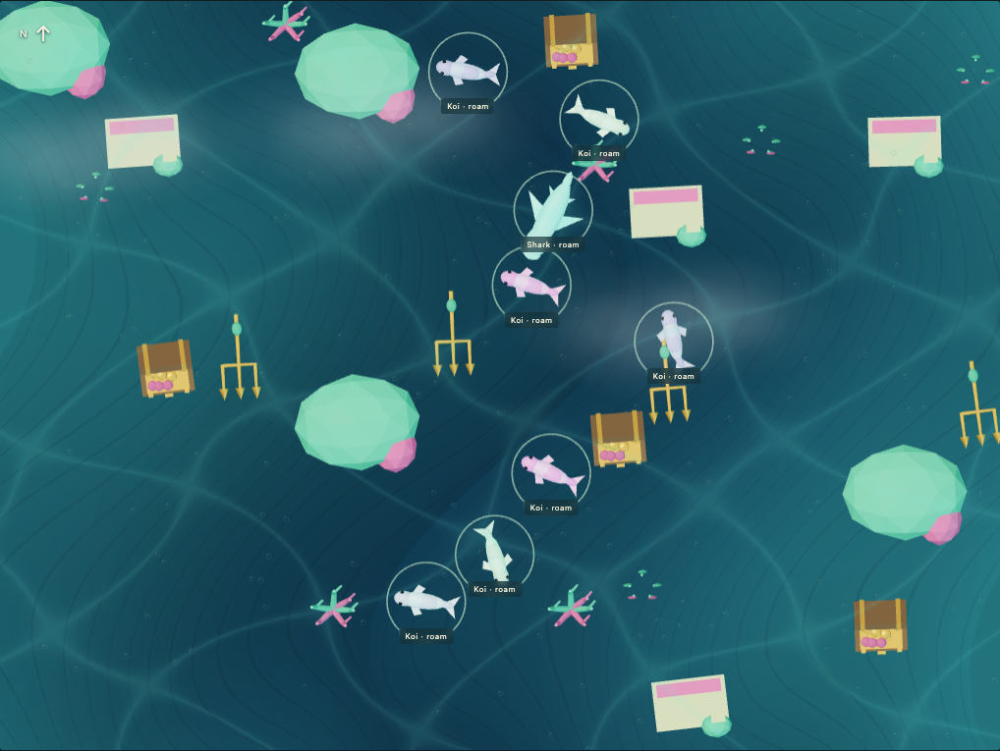

Shape the land
Raise peaks, carve valleys, and build islands. The Kinect depth feed captures the surface of the sand.
A HANDS-ON WORLD OF POSSIBILITY
Build a mountain. Make a river.
Watch a little world come alive.
Terrain Lab turns a box of sand into an interactive, projected landscape. Explore its terrain and wildlife right here in your browser, then bring it into the physical world.
Browser demos are free to explore. No sensor required.
01 / THE IDEA
In a physical sandbox, a depth camera reads the shape of the sand. Terrain Lab turns those heights into colorful contours and water, then projects them back onto the surface. Move the sand, and the landscape changes with it.
Raise peaks, carve valleys, and build islands. The Kinect depth feed captures the surface of the sand.
Elevation becomes color and contour. Choose a world, adjust the water line, and watch the map take shape.
Wildlife seeks safe habitat. Rabbits flee foxes, deer evade wolves, and sharks pursue fish. Reach in with your pointer to rescue an animal.
02 / PLAY IN THE BROWSER
Start with a demo.
Bring your curiosity.

LIVE SANDBOXExplore color worlds, water levels, editable terrain, and living wildlife. Connect a local Kinect when your rig is ready.

WILDLIFE FIELD NOTESExplore 20 living worlds: swaying forests, erupting mountains, and sunken Atlantis treasures. Choose animals and rescue them from nearby predators.
03 / FROM SCREEN TO SAND
A Kinect v1, an overhead projector, a box of sand, and a Mac. The field guide walks through the local bridge, calibration, and projector workflow.
Read the field guide →An evolving open-source project. Physical alignment and visual approval remain part of each rig's setup.